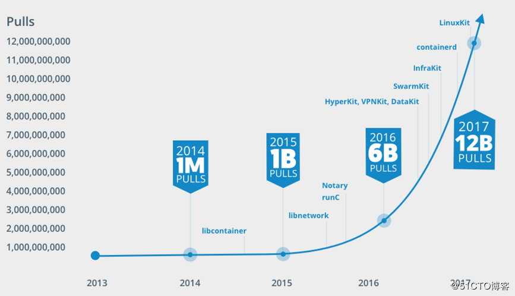
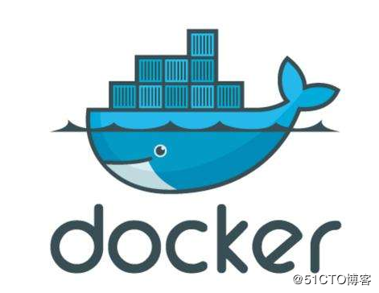
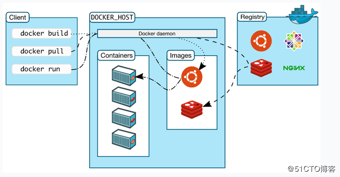
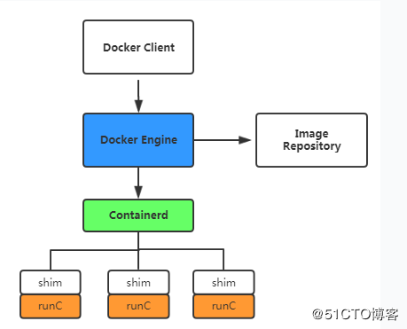

Docker是一个开源的应用容器引擎，使用Go语言开发，基于Linux内核的CGroup，Namespace，Union FS等技术实现，对应用程序进行封装隔离，并且独立于宿主机与其他进程，这种运行时封装的状态称为容器。是一种系统级的虚拟化技术。
Docker早起版本实现是基于LXC，并进一步对其封装，包括文件系统、网络互联、镜像管理等方面，极大简化了容器管理。从0.7版本以后开始去除LXC，转为自行研发的libcontainer，从1.1开始，进一步演进为使用runc和containerd。
2014年4月9日，发布第一个正式版本v1.0。
2017年2月8日，发布v1.13.1
2017年3月1日，发布v17.03-CE版本，从此版本开始分为企业版和社区版。
从下图可以看出从2106年Docker技术引起爆发式关注。

Docker的思想源于集装箱，集装箱解决了什么问题呢？在早期运输货物需要不同分类的船，例如运输水果的船，运输生活用品的船，有了集装箱后，在大船上，可以把货物分类到不同的集装箱中，水果一个集装箱，生活用品一个集装箱，它们之间互不影响，只要把货物封装好集装箱里，就可以把不同类的货物一起运走。 通过Docker logo也可以看出所以然来，Docker就像大船，集装箱就是容器。
一条鲸鱼拖着若干个集装箱的经典形象已经深入人心。

Docker理念是将应用及依赖包打包到一个可移植的容器中，可发布到任意Docker Engine上。使用沙箱机制运行程序，程序之间相互隔离。
随着Docker的火热，docker、oci、runc、containerd等等名词也逐渐传播开来。这么多的名词，也容易让人混淆，下面对相关名词和其之间的联系进行一下梳理和总结，方便大家更好地理解。
在2015年，由Docker、Redhat、Google、IBM、Microsoft等厂商共同成立OCI（Open Container Initiative）的组织，其目的围绕容器技术指定开放标准和规范。
在2017年7月，OCI v1.0正式发布，其中包含两个规范：容器运行时（runtime）和镜像规范（image），有了这两个规范，不同组织和厂商开发的容器就能够在不同的Container引擎上运行。这样就保证了容器的可移植性和互操作性。
OCI下一步关键工作是提供认证，以验证开发者的产品和项目是否符合规范。

Docker daemon
Docker采用C/S架构，Dcoker daemon作为服务端接受来自客户端请求，并处理这些请求，比如创建容器、管理镜像。
为了兼容OCI标准，Docker1.1之后也做了架构调整，Docker容器运行已经不是简单的通过Docker daemon来启动，而是集成了containerd、runc等多个组件。
如下图：

Containerd：是一个简单的守护进程，管理shim，向Docker Engine提供接口。使用UnixSocket通信，协议是grpc。
Shim：管理一个容器
runC：运行一个容器。是基于OCI标准的一个容器技术实现，是一个可以直接创建和运行容器的工具。runc直接与容器所依赖的cgroups/kernel等进行交互，负责容器所需环境。
工作流程：
dockerd拿到镜像后，通过grpc通知docker-containerd进程启动容器，docker-containerd收到dockerd启动容器请求之后，再启动docker-containerd-shim进程，docker-containerd-shim进程启动后，按照runtime准备运行环境，再启动docker-runc进程。docker-runc进程打开容器的配置文件，找到rootfs位置，根据配置文件启动相应进程。
Containers
Container中文意思是集装箱，很多人叫容器，其实延续了原理的Linux container，不管叫哪个，含义是一样的。我觉得叫容器比较合适。容器本质上是Linux系统上的一个进程，这个父进程可能会有多个子进程组成，这个一组进程受资源限制，与其他组进程之间隔离。这种运行时的状态成为容器。
Images
Docker的流行，很大因素是取决于有数十万计免费的应用镜像，使得用户或者开发者很容器找到可用的镜像。
镜像不是一个单一的文件，而是有多层构成。可以理解为镜像是创建容器的模板，一个镜像可以创建N个容器。镜像通常封装了一个应用的基础环境。
在未来数月，Amazon Container Registry、Google Container Registry、Docker Hub 及 Quay 等 Container 储存库，也都将支援 OCI 映像档标准。
Docker Client
通常说的Docker，指的是Docker Engine，是以daemon模式运行。而Docker CLI是客户端，用于管理Docker Engine，例如镜像管理、容器管理等操作。
Registry
容器是通过镜像创建的，大量的镜像需要找一个地方存放，这就需要Registry（注册中心）。
企业通常自建私有仓库，也可以使用公共仓库，例如：
Docker Hub
地址：https://hub.docker.com
Docker官方提供的公共托管Registry，上面有很多现成的镜像，Docker CLI默认就是从这个仓库下载的。
Quay.io
地址：https://quay.io
另一个公共托管的Registry，提供与Docker Hub类似的服务。